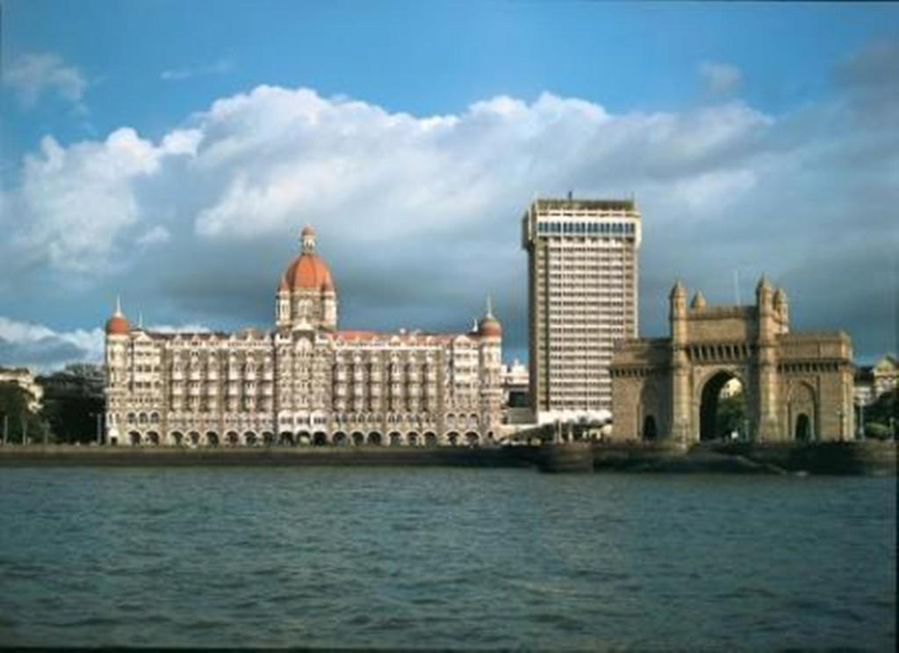
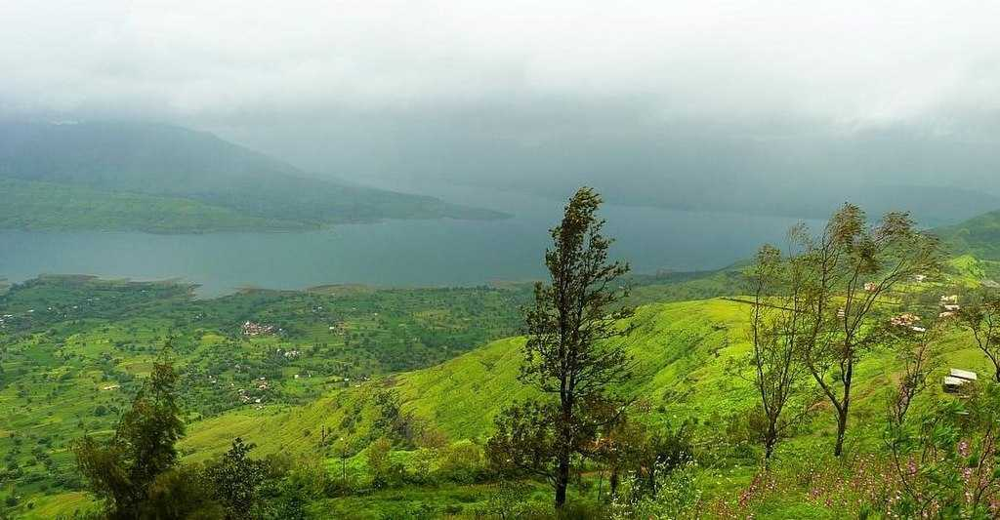
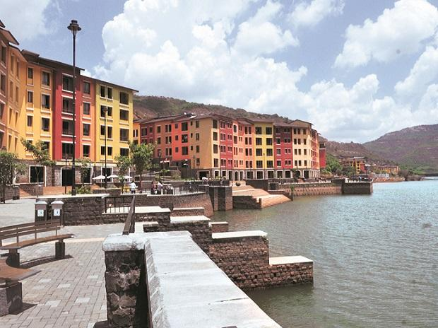
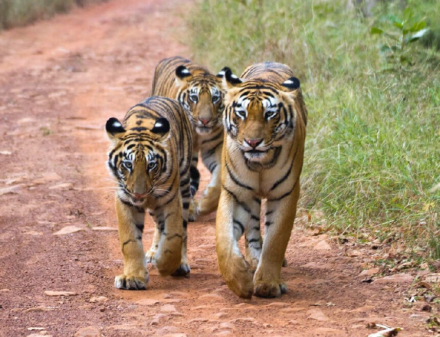

TOUROPIA
PLAN YOUR TRIP REGISTER/LOGIN FAQs CONTACT US
ExploreMaharashtra
Often called the 'Gateway to the Heart of India', Maharashtra is the third largest state and second most populous state than in the country.
Maharashtra, the land of everything unlimited invites you into its widespread plethora of attractions.
It is adorned by the beautiful Sahyadri ranges of the Western Ghats with high mountains that disappear into the morning mist, while the sprawling belt of the Konkan Coast mesmerises the eyes by its white beaches.
The ruins of the ancient forts and palaces in Pune and Ratnagiri among others proudly narrates the story of the then mighty rulers of Maharashtra.
Apart from being rich in history, traditional arts and lifestyle, it is also famous for its economy primarily because Mumbai -the financial capital of India is situated here.
The amalgamation of these varieties of things that this state offers will make your visit here absolutely worthwhile.

Mahabaleshwar
Mahabaleshwar is a hill station located in the Western Ghats, in Satara district of Maharashtra. Apart from its strawberries, Mahabaleshwar is also well known for its numerous rivers, magnificent cascades and majestic peaks. It is among the most sought after weekend getaways from Pune & Mumbai, located about 120km south-west of Pune and 285km from Mumbai.

Mumbai
Mumbai, the capital city of the Indian state of Maharashtra, is a spectacular paradox of chaos and hope, glamour and squalor, modernity and tradition.
Famously known as the City of Dreams, Mumbai – formerly known as Bombay - Mumbai is a beautifully blended melting pot of cultures and lifestyles.
The city soaks in everything into its fabric, making it its very own.

Panchgani
Panchgani is a popular hill station near Mahabaleshwar in Maharashtra, famous for its various sunset and sunrise points and scenic valley view.Located at an altitude of 1,334 mts, the picturesque backdrop of hills on one side and coastal plains on the other makes for an amazing view.

Lavasa
Lavasa is a privately planned hill city located near Pune in Maharashtra. This modern day hill station is an enjoyable retreat for all its visitors and has a lot to offer to its tourists from picturesque sceneries to an extremely well-developed infrastructure. It is situated in Mose Valley near Pune at a distance of 65 Km, about an hour drive, and from Mumbai, it is approximately 200 Km away.

Tadoba National Park
Tadoba Andhari Tiger Reserve is definitely one of India's most exciting and best protected Tiger Reserve, with most visible tiger sightings in the state of Maharashtra. Tadoba national park is located in Chandrapur district of Maharashtra. This place is an ideal weekend gateway for wildlife and nature lovers.
 Lonavala
Lonavala
Lonavala is the most visited hill station in Maharashtra and the place to be during monsoons. With lots of waterfalls, lakes and hills around, it is a popular destination for camping, trekking and other adventure sports.Surrounded by dense forests, waterfalls, and dam alongside lakes, it is a must-visit if you admire nature. Located at an elevation of 624 m above sea level, Lonavala is one of the twin hill stations - Lonavala and Khandala.